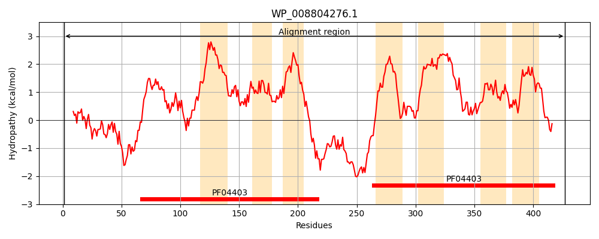
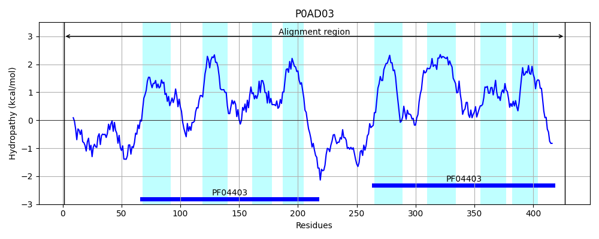
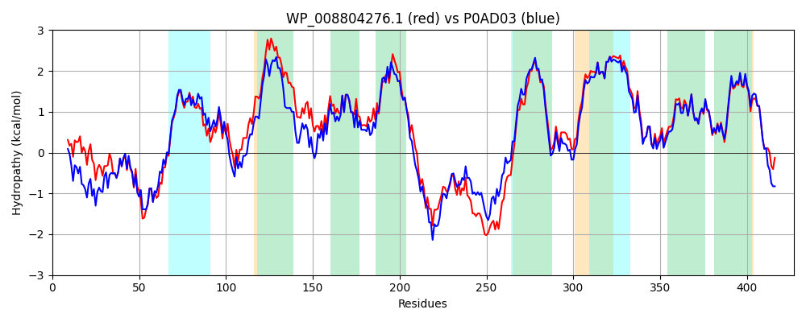

Hit Accession: P0AD03
Hit TCID: 9.A.69.1.2
Hit Description: gnl|BL_ORD_ID|8740 gnl|TC-DB|P0AD03|9.A.69.1.2 Inner membrane protein YebS OS=Escherichia coli (strain K12) GN=yebS PE=1 SV=1
Mach Len: 427
e:0.000000
Query TMS Count : 7
Hit TMS Count: 8
TMS-Overlap Score: 7.200000
Predicted Substrates:CHEBI:8150;phospholipid
BLAST Alignment:
Score: 1725 , Bit scores: 669 bits, E-value: 0.0e+00, Alignment length: 427, Percentage identity: 75
Query: 1 MPIKTPTIKPAKKLVVHAVSTPLPYAHYQRCTQCDMLFRLPVLKRNQSAWCPRCNAKVRDGRDWSLTRLGSMAVAMLLLMPFAWSEPLLRLHLLGVRIDANVLQGIWQMTAQGDPLTAAMVLFCAVVAPVLLVVSISYLWLGNVLGMNLRPVLLMLGKLKEWVMLDIYLVGIGVASIKVQDYAFLQPGIGLVAFISLTLLSILTLIHMNVEELWERFYPERPATRADNNLQVCTGCHYTGYRDARGRCRRCHSPLHHRRPQSLQRSWAALIASLIFLLPANLLPISIIYVNGARQDDTILSGIISLASSNIAIAGVVFIASILVPFTKVIVLFTLLVSIQFKCEQGLRTRILLLRLITWIGRWSMLDLFVISLTMSLINRDQLLAFTMGPAAVYFGGAVILTILAVEWLDSRLLWDAHESGIARFAD 427
M + TP I P KK+ V A+ LP YQRC QCDMLF LP + +QSA+CPRC AK+RDGRDWSLTRL +MA MLLLMPFAW EPLL + LLG+RIDANV+QGIWQMT QGD +T +MV FC + AP++LV SI+YLW GN LGMNLRPVLLML +LKEWVMLDIYLVGIGVASIKVQDYA +Q G+GL +F++L +L+ +TL H+NVEELWERFYP+RPATR D L+VC GCH+TGY D RGRC RCH PL RR SLQ+ WAAL+AS++ LLPANLLPISIIY+NG RQ+DTILSGI+SLASSNIA+AG+VFIASILVPFTKVIV+FTLL+SI FKC+QGLRTRILLLR++TWIGRWSMLDLFVISLTMSLINRDQ+LAFTMGPAA YFG AVILTILAVEWLDSRLLWDAHESG ARF D
Sbjct: 1 MALNTPQITPTKKITVRAIGEELPRGDYQRCPQCDMLFSLPEINSHQSAYCPRCQAKIRDGRDWSLTRLAAMAFTMLLLMPFAWGEPLLHIWLLGIRIDANVMQGIWQMTKQGDAITGSMVFFCVIGAPLILVTSIAYLWFGNRLGMNLRPVLLMLERLKEWVMLDIYLVGIGVASIKVQDYAHIQAGVGLFSFVALVILTTVTLSHLNVEELWERFYPQRPATRRDEKLRVCLGCHFTGYPDQRGRCPRCHIPLRLRRRHSLQKCWAALLASIVLLLPANLLPISIIYLNGGRQEDTILSGIMSLASSNIAVAGIVFIASILVPFTKVIVMFTLLLSIHFKCQQGLRTRILLLRMVTWIGRWSMLDLFVISLTMSLINRDQILAFTMGPAAFYFGAAVILTILAVEWLDSRLLWDAHESGNARFDD 427 | Protein Hydropathy Plots: |
|---|
|  |  |
Pairwise Alignment-Hydropathy Plot:
|
|---|
|  |